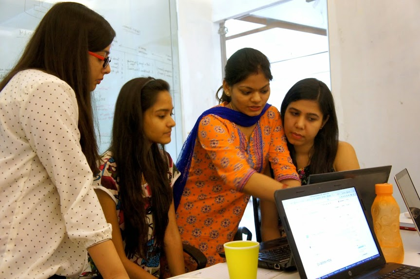

I was following Pyladies from quite a long time, and I was keen to start the chapter here in India. Finally we could start one on our own. I am so excited to announce that on June 14th, 2014 - 4 women (out of them 3 were python developers) finally met for the first time at Noida for Pyladies Meetup.
Yay we made it :-)

On our first Meetup, we discussed about:
- Each others interest
- Setting up a new project and Github repository
- Introduction of virtual environment and Python
- And agenda for next Meetup
It was very exciting, meeting and talking about our challenges and issues. I called some of my male colleagues to help us and they were very positive and enthusiastic while helping us.
We planned to meet every month atleast once and learn coding together. If anyone is interested, then please follow us on Meetup.com and know more about our upcoming meetup.